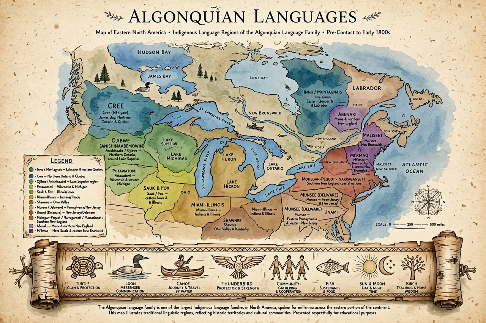

The Algonquian languages are an Indigenous language family of North America, spoken from the Atlantic coast to the Rocky Mountains, including around the Great Lakes.
Subgroups include Plains (Blackfoot, Cheyenne, Arapaho), Central (Cree, Ojibwe, Menominee, Potawatomi) and Eastern (Mi'kmaq, Maliseet, Massachusett, Powhatan). Proto-Algonquian is reconstructed by linguists from these daughters.
Algonquian languages are polysynthetic, with complex verbs, animate/inanimate gender, and obviation marking a fourth person. Many are endangered; revitalisation is underway among peoples such as the Anishinaabe.